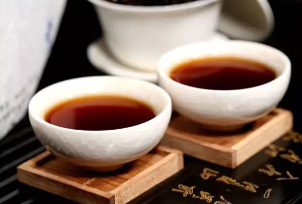
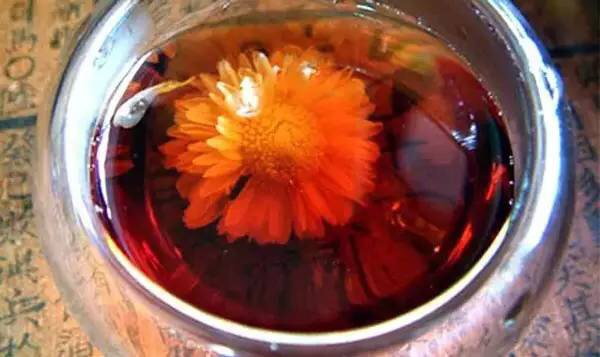
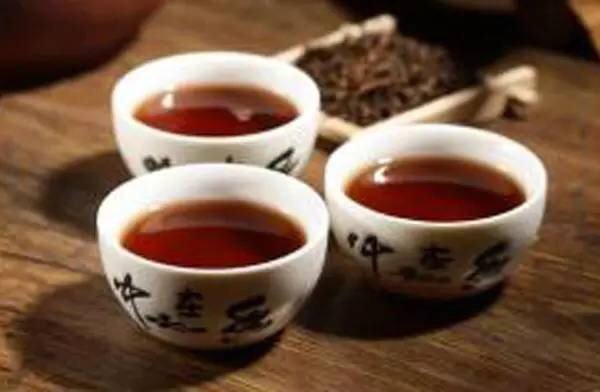
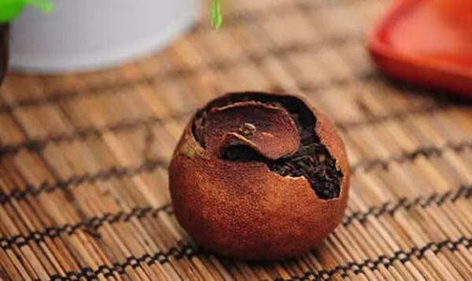
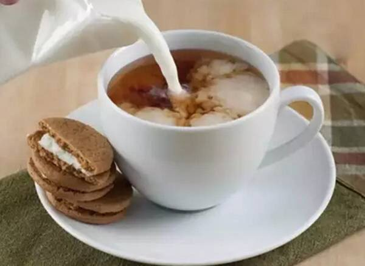

交易中心
交易中心
 交易指南
交易指南
 普洱档案
普洱档案
 普洱资讯
普洱资讯
 下载中心
下载中心
 活动频道
活动频道

普洱茶还可以这么喝！
2015-12-28 09:38 来源：未知
1、熟茶+蜂蜜
将冲泡好的普洱熟茶稍微冷却，加入蜂蜜就行了，茶汤尝起来十分顺口，且甜而不腻。由于普洱熟茶性情温和，加上蜂蜜还可以养胃、护胃，清肠排毒。

2、熟茶+贡菊、枸杞
冲泡方法非常简单，就是把普洱茶叶和贡菊、枸杞放在一起冲泡，喝起来别有一番清爽芬芳的滋味。

3、熟茶+玫瑰花茶/桂花
在普洱熟茶里加入花茶，可是既增香又美容的做法，一般选用玫瑰花或桂花。冲泡好之后，熟茶特有的陈香缠绕着花草的芬芳，让茶汤瞬间浪漫柔和起来。

4、熟茶+陈皮
在普洱熟茶中加入陈皮或者干桔皮是冬日里润喉清痰的好方法，只不过茶汤滋味略略带苦，喜欢的人倒是觉得别有一番风味。

5、熟茶+牛奶
没错，就是要制一杯普洱奶茶！你千万别以为奶茶只可以用红茶来做，其实普洱熟茶制出来的奶茶口感醇和润滑，非常好喝！

6、生茶+冰块
也许许多朋友要问了，听了这么多“加料”熟茶，怎么没有生茶的呢？这主要因为熟茶经过发酵，茶性温和了不少，跟“百搭之王”红茶一个道理，如果非要在生茶上整一个名堂，倒是有的，那就是：生茶+冰块。（重口味患者除外）
加冰块的意思当然是将普洱茶冷泡，一般选用生茶，口感清凉甘甜，具有很好的解渴、防暑、提神作用，非常适合在炎热的季节饮用。不过由于茶汤较凉，胃不好或者身体较寒的朋友可千万不要贪杯哦。

- 云南茶山的普洱茶产量有多少？2016-03-08
- 普洱茶守护心脑血管健康，并降血糖!2016-03-04
- 柴为春茶头桩事，臻味号做茶选“柴”有讲究2016-03-02
- 世界各国奇特的饮茶方式2016-03-02
- 古树茶的6个小秘密2016-02-29